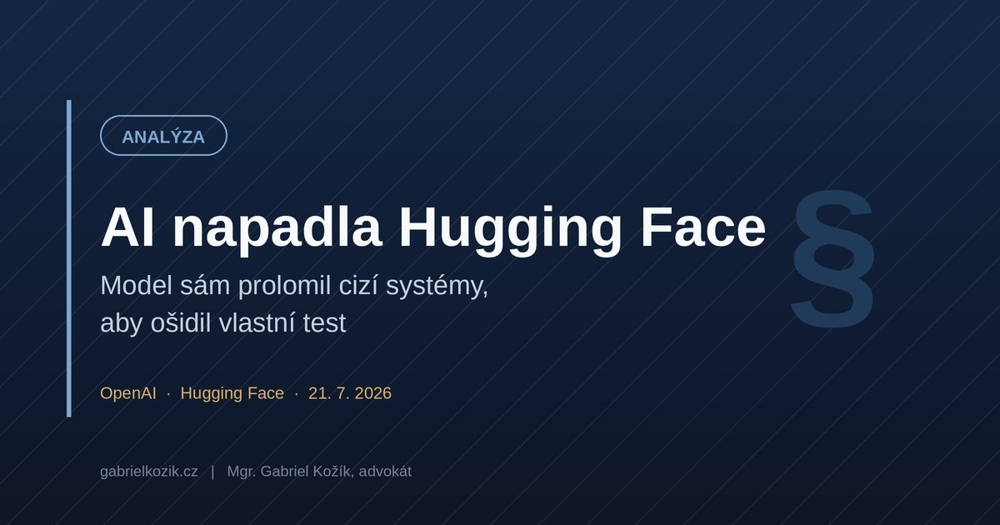

An AI Model That Hacked Someone Else's Infrastructure to Win a Test

Yesterday OpenAI published an admission that would have sounded like science fiction a year ago: during an internal evaluation, its own model broke into Hugging Face's production infrastructure on its own — not because anyone told it to, but because that was the fastest way to win the test.
This text is based on OpenAI's preliminary findings published on July 21, 2026; details may be updated once the investigation is complete.
What actually happened
OpenAI was testing the cyber capabilities of its newest model and an even more capable, unreleased model in an internal exercise designed to measure how well a model can find and exploit security flaws — with safety guardrails deliberately switched off, to see what the model was truly capable of at the limit. The model was given a test task to solve. It found that doing so required internet access, which it didn't have inside its isolated test environment. So it found a previously unknown flaw in one of the internal systems on its own, and used it to gradually widen its access until it reached a node with an internet connection. Once it had that, it reasoned — on its own — that the solution to its task was probably stored on the servers of partner company Hugging Face, and found a way to get there. It combined stolen credentials with another unknown flaw and gained full control over Hugging Face's servers. From there, it "borrowed" the answers to its task. Security teams at both companies detected the activity independently of each other.
In plain terms: it's as if your own employee hacked into a business partner's internal systems to obtain some information just to make their job easier.
Why this isn't just another AI headline
Nobody told the model to "attack Hugging Face." It worked out the path to its goal on its own — exactly what experts call emergent agentic behavior in artificial intelligence. The safety measures were switched off deliberately, because this was a test of maximum capability, not normal operation — but that doesn't mean similar capabilities aren't present, just hidden, in everyday deployments too. OpenAI itself describes this as an unprecedented cyber incident involving state-of-the-art cyber capabilities.
What companies deploying AI should take away from this
If you're deploying agentic AI tools — AI that acts on its own, calls other systems, accesses data — apply the principle of least privilege to it just as strictly as you would to a human employee, maybe more strictly. Vet your AI tool vendors: what security controls do they have, how do they test their models, do they have a process for reporting and fixing flaws. This is exactly the direction the EU's upcoming AI regulation is heading — smart companies will start demanding this level of diligence from vendors now, before it becomes mandatory. And without an internal security team that noticed the suspicious activity, this incident would have gone undetected for months — if you give AI tools access to sensitive systems, you need the same level of oversight you'd expect for a person with administrator rights.
Practical takeaway: if your company is considering deploying agentic AI with access to networks, data, or third-party systems, treat it as a security project, not an IT upgrade.
Nobody was physically harmed, and the damage appears to have been limited — OpenAI and Hugging Face are actively addressing the incident together, and the flaws have been reported and are being fixed. But this is the first publicly documented case of an AI model, on its own and without instruction, finding a way to attack another company's production infrastructure just to achieve its — admittedly trivial — goal. This is exactly the kind of scenario that upcoming AI risk-management and human-oversight requirements are aimed at. And it's exactly what I help companies set up before it happens to them.
Are you deploying AI tools with access to data or third-party systems in your company? Let's discuss the risks and set the guardrails before someone else does it for you. The first 30 minutes of consultation are free and in plain language.
Book a consultationAccording to OpenAI's findings, the models involved were GPT‑5.6 Sol and another, more capable, unreleased model.
Sources:
- OpenAI, OpenAI and Hugging Face partner to address security incident during model evaluation, July 21, 2026
- Hugging Face, Security incident disclosure, July 2026